Cel
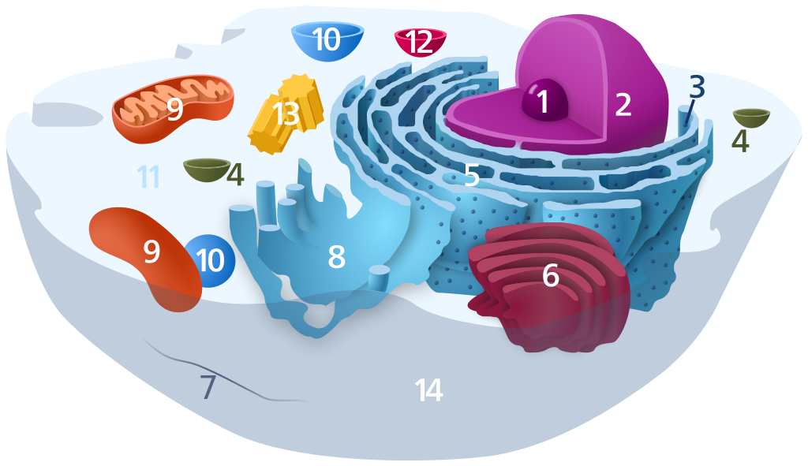
1. nucleolus
Bevindt zich in de celkern en bestaat uit RNA, DNA en eiwitten en bevat de moleculaire machinerie die nodig is voor de vorming van ribosomen
2. celkern of nucleus
een groot, membraan-omsloten organel dat voorkomt in de cellen van alle eukaryotische levensvormen In de celkern is het meeste genetisch materiaal (DNA) van het organisme opgeslagen
3. ribosoom
een moleculair complex van eiwitten en ribosomaal RNA (rRNA) dat de centrale plaats vormt van eiwitsynthese
4. vesikul
een klein blaasje dat stoffen bevat en omgeven is door een membraan; de functie van een vesikel is het opslaan of het transporteren van bepaalde stoffen in de cel
5. ruw endoplasmatisch reticulum
een netwerk (reticulum) van membranen dat gelegen is in het cytoplasma van een eukaryote cel; het herbergt de ribosomen en heeft daardoor een belangrijke rol in de eiwitvorming (eiwitsynthese) in de cel
6. golgicomplex
behoort tot het endomembraansysteem van een eukaryotische cel
7. cytoskelet
Een netwerk van vezels en buisjes dat de cel stevigheid geeft en bijdraagt aan haar vorm en beweeglijkheid. Het bestaat uit verschillende soorten eiwitten.
8. glad endoplasmatisch reticulu
een netwerk (reticulum) van membranen dat gelegen is in het cytoplasma van een eukaryote cel
9. mitochondria
een boon- of bolvormig celorganel dat functioneert als energieomzetter van de eukaryote cel
10. vacuole
een blaasje gevuld met vocht, dat omgeven is door een vacuolemembraan (tonoplast) en dat zich in het cytoplasma van een cel bevindt
11. cytoplasma
alles waar een cel uit bestaat behalve de kern, de celmembraan en de eventuele celwand (enkel aanwezig bij een plantaardige cel)
12. lysosoom
een blaasje dat zich in het cytoplasma bevindt en ook wel "de afvalberg van de cel" genoemd wordt
13. centrosoom
verdubbelt zich bij de kerndeling, waarna elk centrosoom zich langzaam naar een
kant van de kern beweegt
geleidelijk ontwikkelt zich in de buurt van elk van de centrosomen een structuur
van draden
deze draden zorgen ervoor dat de chromosomen in de cel (die bij de celdeling los
in het cytoplasma zitten) in het midden gehouden worden.
14. celbraam
een biologische structuur die de binnenkant van een cel scheidt van de buitenkant
Chromosoom
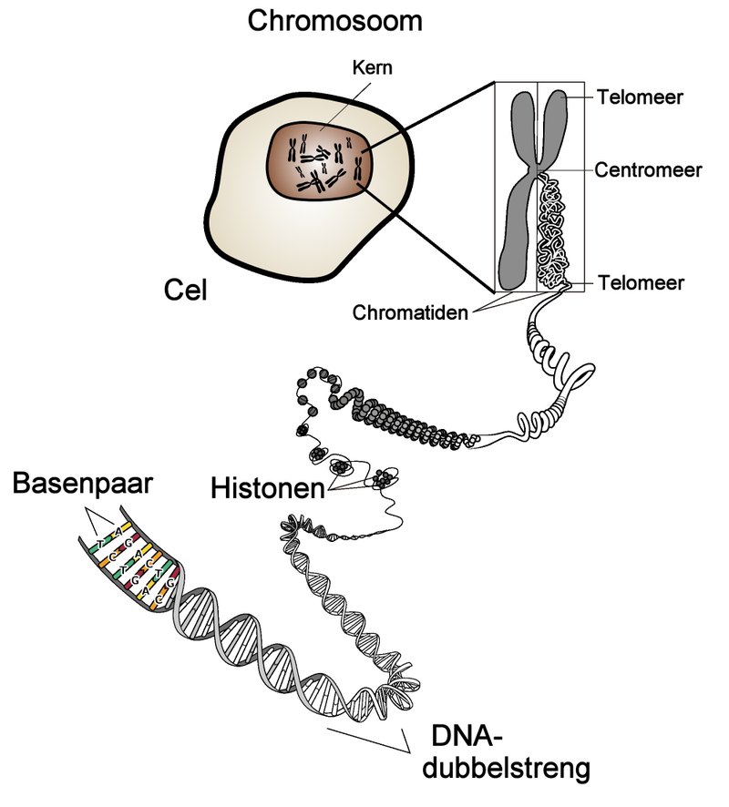
Een chromosoom is de drager van een deel van het erfelijk materiaal (DNA) van een organisme
chromatine
het complex van DNA en eiwitten in de celkern van eukaryotische cellen
naargelang de strakheid waarmee het DNA om de andere eiwitten heen gevouwen zit,
onderscheiden we euchromatine en heterochromatine
telomeer
bestaat deels uit dubbelstrengig en deels uit enkelstrengig DNA, ingekapseld in beschermende eiwitten, en zit aan het uiteinde van een chromosoom
chromatide
Tijdens de kerndeling (mitose of meiose) verkeren chromosomen in een verdubbelde toestand. Elk van de beide exemplaren wordt een chromatide genoemd.
centromeer
De plaats waar twee zusterchromatiden na de verdubbeling van een chromosoom met elkaar verbonden blijven tijdens de mitose en meiose.
histon
Histonen zijn specifieke eiwitten die samen met het DNA in de celkern het chromatine vormen.
autosoom
een chromosoom dat geen geslachtschromosoom (heterosoom) is; bij de mens dus niet het X of Y-chromosoom
X-chromosoom
een van de twee geslachtschromosomen in de mens
Y-chromosoom
een van de twee geslachtschromosomen in de mens
epistase
is de niet-allele interactie en is dus de interactie tussen genen op verschillende loci.
DNA (desoxyribonucleinezuur)
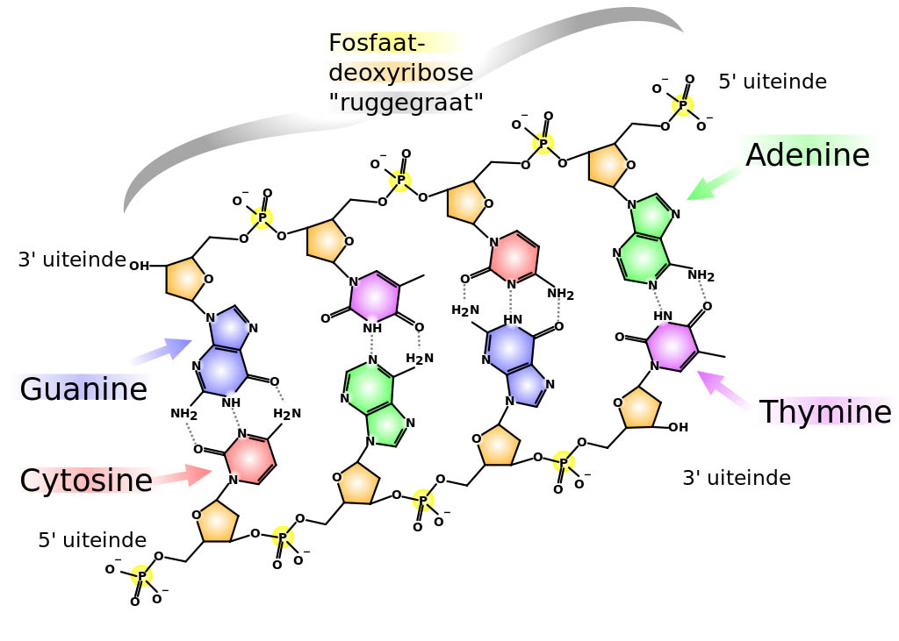
DNA
DNA behoort net als RNA tot de nucleinezuren waarin een groot aantal bouwstenen, de nucleotiden, aan elkaar geschakeld zijn.
Het bestaat uit twee lange strengen van nucleotiden,
in de vorm van een dubbele helix.
De twee strengen zijn met elkaar verbonden door
waterstofbruggen.
DNA bevat vier verschillende nucleotiden met de
nucleobasen adenine, thymine, guanine en cytosine,
die afgekort worden met respectievelijk
de letters A, T, G en C.
nucleotiden
vormen een groep van bio-organische verbindingen die de bouwstenen voor DNA en RNA vormen
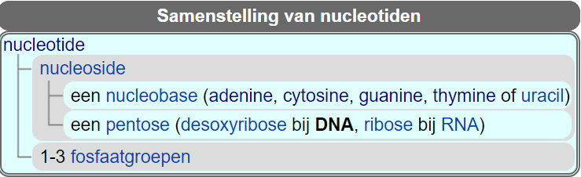
vereenvoudigde DNA-structuur
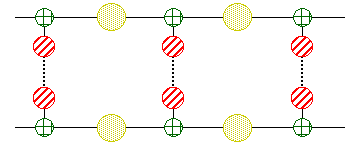
geel = fosfaat; groen = pentose; rood = stikstofhoudende base.
De doorgaande lijnen vertegenwoordigen de covalente bindingen
en de onderbroken lijnen de waterstofbruggen.
nucleotidemolecuul
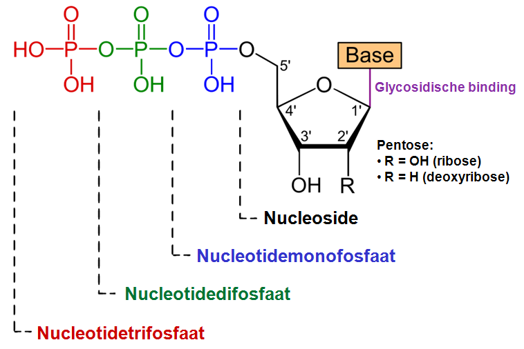
Adenine
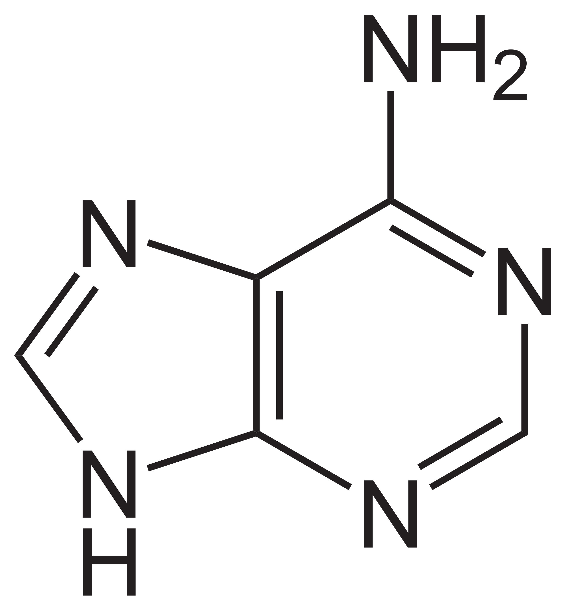
C5H5N5
Adenine is een nucleobase en kan
twee waterstofbruggen vormen met thymine.
Cytosine
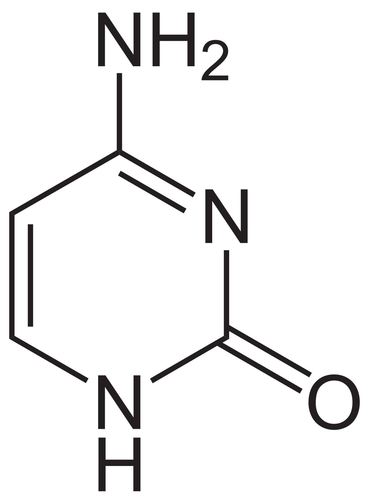
C4H5N3O
Cytosine is een nucleobase en kan drie
waterstofbruggen vormen met guanine.
Guanine
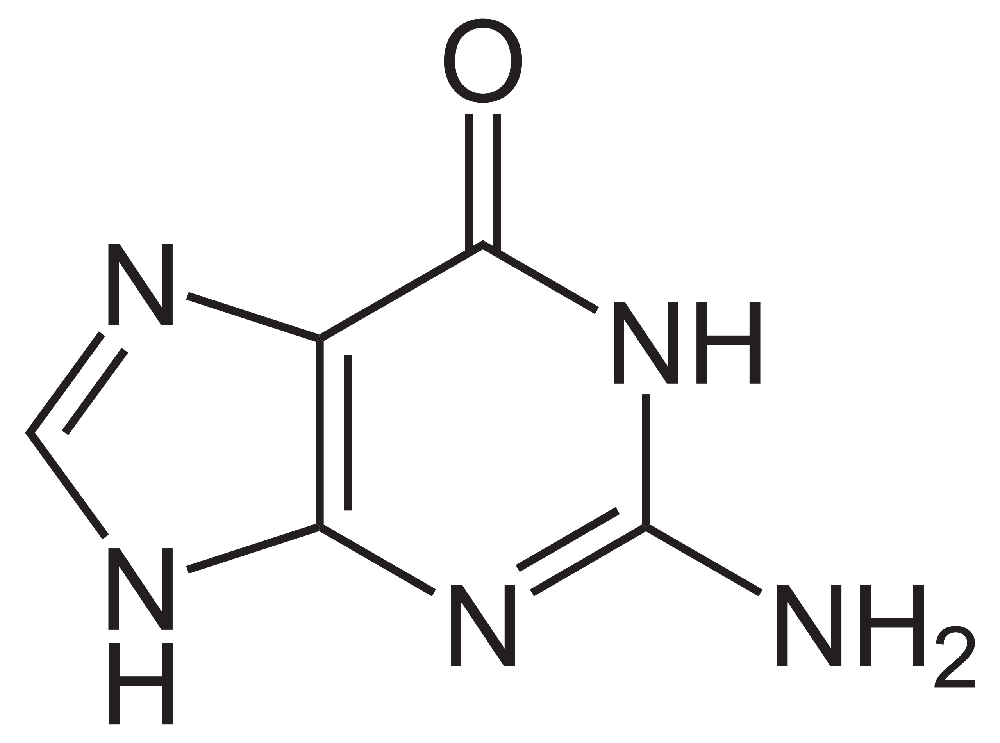
C5H5N5O
Guanine is een nucleobase en kan drie waterstofbruggen vormen met cytosine.
Thymine
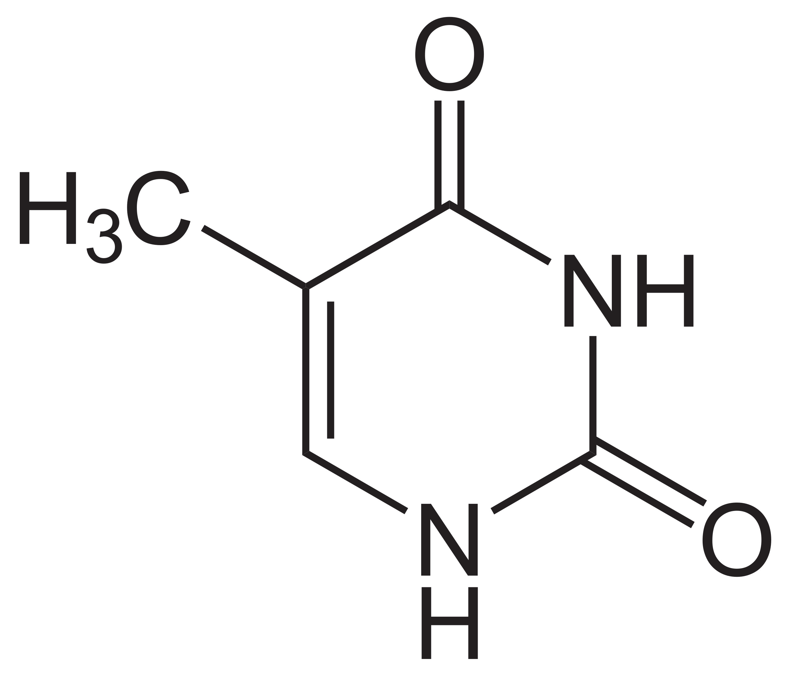
C5H6N2O2
Thymine is een nucleobase en kan twee waterstofbruggen
vormen met adenine.
Desoxyribose
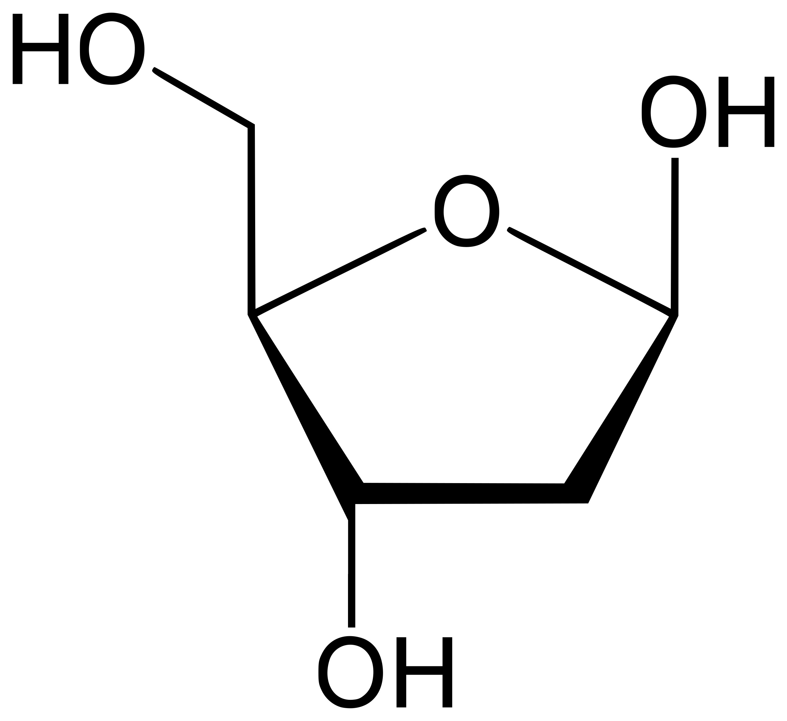
C5H10O4
Desoxyribose is een monosacharide en vormt
samen met een trifosfaat en één base een nucleotide.
Fosfaatgroep
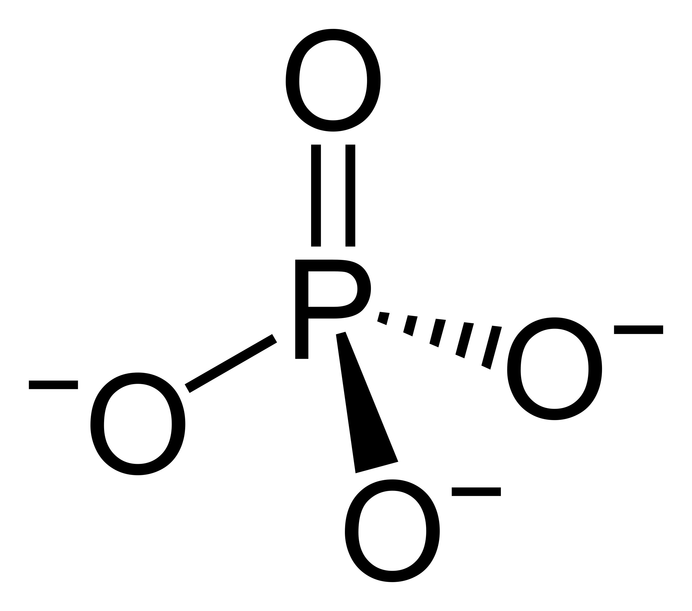
Fosfaatgroepen verbinden de desoxyribose moleculen.
Waterstofbrug
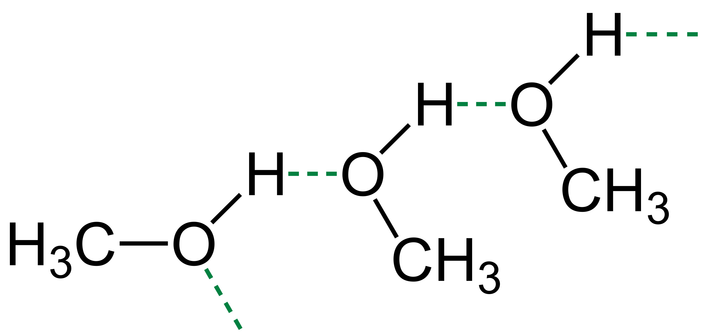
Een waterstofbrug is een polaire, niet-covalente binding tussen een elektronenpaar op een sterk elektronegatief atoom (zuurstof, stikstof of fluor) en een naburig waterstofatoom, gebonden aan een ander sterk elektronegatief atoom.
Codon
3 opeenvolgende basenparen (triplet of codon) coderen voor 1 aminozuur in het eiwit; daarmee zijn er 64 mogelijkheden om een codon te vormen
Gen
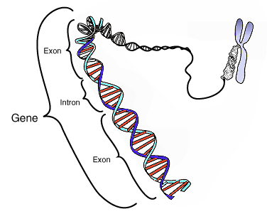
Een gen is een discrete eenheid van erfelijk materiaal, waarmee organismen erfelijke
eigenschappen doorgeven aan hun nageslacht
Een mens heeft 20.000 genen (een plant het dubbele). Slechts 2% van de genen codeert voor een eiwit.
Allel
Een allel is een bepaalde variant van een gen.
Als een organisme voor een bepaald gen twee gelijke allelen heeft, dan noemt
men
dit
een homozygoot organisme.
Als het twee verschillende allelen heeft, noemt men het organisme
heterozygoot.
Homozygoot
Een organisme is homozygoot voor een bepaalde eigenschap als het twee identieke kopieën van een gen op een chromosomenpaar heeft.
Heterozygoot
Een organisme is heterozygoot voor een bepaalde eigenschap, als het twee verschillende vormen (allelen) van een gen heeft
dominant
Een genetische eigenschap is dominant als bij een diploïd organisme één van de twee allelen van een gen tot uiting komt.
recessief
Een genetische eigenschap is recessief als bij een diploïd organisme deze eigenschap alleen tot uiting (expressie) komt, wanneer een dominant allel ontbreekt.